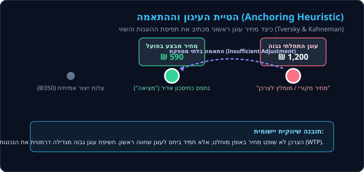
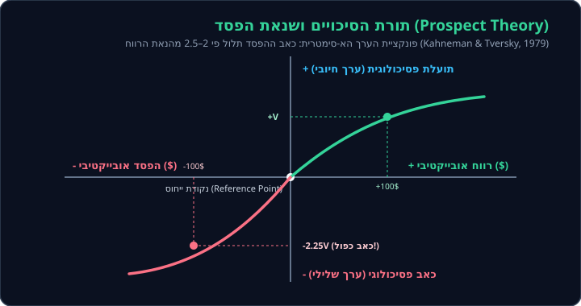
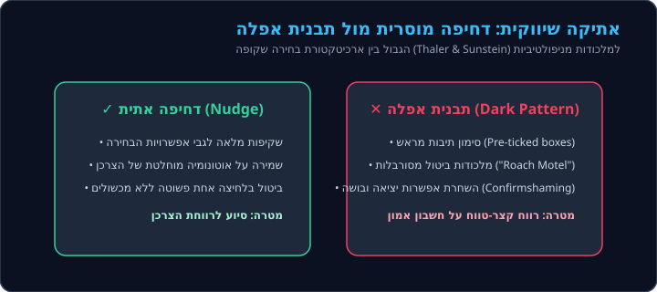
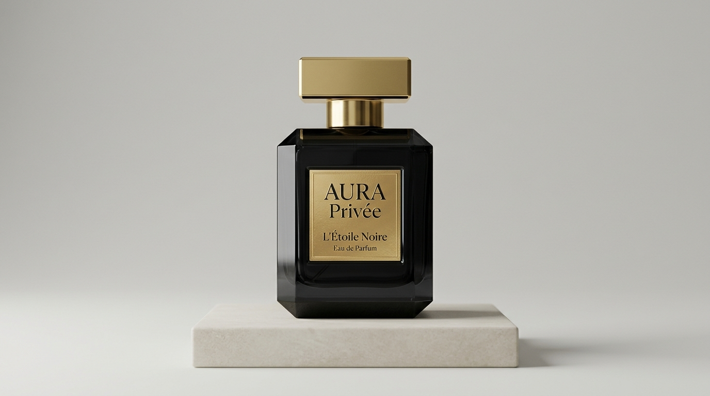

המוח הצרכני
הפסיכולוגיה שמאחורי החלטות קנייה
The Consumer Brain: The Psychology Behind Purchasing Decisions
סטודנטית לפסיכולוגיה
אוניברסיטת חיפה | תהליכים קוגניטיביים והתנהגותיים
סטודנטית לתקשורת ושיווק
אסטרטגיה מותגית וקבלת החלטות צרכניות
מבוא וגבולות המדע: מיתוס מול מציאות
מודל שתי המערכות: אינטואיציה מול שיקול דעת

קשב חזותי וסלקטיביות

תפיסה ועיבוד חושי

רגשות וסמנים סומטיים בהחלטות

זיכרון ואסוציאציות מותג

הדמיה תלת-ממדית: מפת המוח הקונספטואלית
הודעת מערכת: טעינת מודל תלת-ממד
הדפדפן אינו תומך בהאצת חומרה (WebGL) או שחלה שגיאה באתחול המנוע הגרפי.

הטיית העיגון וההתאמה

שנאת הפסד ותורת הסיכויים

אפקט הפיתיון ופרדוקס הבחירה

השפעה והוכחה חברתית

תורת הסיכויים: למה הפסד כואב יותר מרווח?
📊 עקומת הערך הפסיכולוגי של כהנמן וטברסקי
פונקציית S א-סימטריתאפקט העיגון: איך המחיר הראשון משפיע עלינו?
אוזניות סטודיו אלחוטיות
מחיר בסיס אמיתי: ₪ 399
📊 הערכת השווי של הצרכן:
כאב התשלום וארנקים דיגיטליים

שיווק מבוסס מדע ואתיקה מקצועית

סוכני AI ועתיד ההחלטות הצרכניות

סיכום ותובנות יישומיות
אינטגרציה בין פסיכולוגיה לשיווק:
החלטות צרכניות אינן אקראיות ואינן רציונליות לחלוטין. הן מנוהלות על ידי אינטראקציה מורכבת בין מנגנוני קשב סלקטיביים, תחושות גופניות מקדימות (סמנים סומטיים), הטיות קוגניטיביות מושרשות ועוצמתה של השפעה חברתית.
בנה אמון שקוף, הפחת עומס קוגניטיבי, והשתמש בארכיטקטורת בחירה חיובית ללא מניפולציות מטעות.
זהה עוגני מחיר, השהה החלטות אימפולסיביות של מערכת 1, והפעל את מערכת 2 ברכישות משמעותיות.
ביבליוגרפיה, קרדיטים ומקורות
ספרות מחקרית מובילה
- Kahneman, D. (2011). Thinking, Fast and Slow. Farrar, Straus and Giroux.
- Tversky, A., & Kahneman, D. (1974). Judgment under Uncertainty: Heuristics and Biases. Science, 185(4157), 1124-1131.
- Kahneman, D., & Tversky, A. (1979). Prospect Theory: An Analysis of Decision under Risk. Econometrica, 47(2), 263-291.
- Damasio, A. R. (1994). Descartes' Error: Emotion, Reason, and the Human Brain. Putnam.
- Cialdini, R. B. (2006). Influence: The Psychology of Persuasion. Harper Business.
- Prelec, D., & Loewenstein, G. (1998). The red and the black: Mental accounting of savings and debt. Marketing Science, 17(1), 4-28.
- Thaler, R. H., & Sunstein, C. R. (2008). Nudge: Improving Decisions About Health, Wealth, and Happiness. Yale University Press.
- Ariely, D. (2008). Predictably Irrational: The Hidden Forces That Shape Our Decisions. HarperCollins.
- Zajonc, R. B. (1980). Feeling and thinking: Preferences need no inferences. American Psychologist, 35(2), 151-175.
- Holbrook, M. B., & Batra, R. (1987). Assessing the role of emotions in consumer response to advertising. Journal of Consumer Research, 14(3), 404-420.
- Petty, R. E., & Cacioppo, J. T. (1986). The Elaboration Likelihood Model of persuasion. Advances in Experimental Social Psychology, 19, 123-205.
תיעוד אלמנטים חזותיים ורישוי
- תמונת מוח מרכזית (שקופית 1): איור דיגיטלי נוירו-גרפי מותאם אישית שנוצר עבור הפרויקט (שימוש פתוח למטרות לימודיות ואקדמיות).
- תצלומי פרסום לבושם (שקופית 20): צילום מוצר מסחרי וקולנועי שנוצר במיוחד עבור הפרויקט ("AURA Privée - L'Étoile Noire") לשם השוואת פרסומת ניטרלית מול רגשית.
- איורים ודיאגרמות קונספטואליות (שקופיות 3–17): איורים וקטוריים מקוריים בפורמט SVG שפותחו עבור המצגת (רישיון פרויקט MIT / Creative Commons BY 4.0).
- הערת רישוי ושימוש הוגן: כלל התכנים והאיורים נוצרו ונשמרו מקומית תחת תיקיית assets/images/ לשם טעינה מלאה ועצמאית, ללא תלות ברשת חיצונית.
כשהפרסומת מעוררת רגש – האם אנחנו רוצים לקנות יותר?

AURA Privée — L'Étoile Noire
₪ 480תיאור מוצר עובדתי, תאורת סטודיו מאוזנת, ללא מוזיקה וללא סיפור אישי.
📝 דרגו את תחושתכם מפרסומת א׳ (סולם 1 עד 10):
השיבו בכנות על פי התרשמותכם הראשונית מהמודעה:
AURA Privée — L'Étoile Noire
₪ 480"יש ניחוחות שלא רק מריחים – אלא זוכרים. רגע של קִרבה אמיתית בשקיעה, מבט אחד שמספר סיפור שלם, וביטחון שאי אפשר להתעלם ממנו. חברו לרגע, הרגישו את העוצמה שלכם."
📝 דרגו את תחושתכם מפרסומת ב׳ (סולם 1 עד 10):
שימו לב כיצד האווירה, הסיפור והדימוי משפיעים עליכם:
📊 השוואת הדירוגים: פרסומת ניטרלית מול רגשית
מחושב במודל סטטיסטי ב-Python🧠 ניתוח פסיכולוגי ומחקרי
לפי מחקרי Zajonc (1980) ו-Holbrook & Batra (1987), תגובה רגשית מקדימה עיבוד קוגניטיבי מפורט. שילוב תאורת שקיעה, קרבה אנושית ומוזיקה יוצר קישור אסוציאטיבי מהיר בין רגשות הנאה וביטחון לבין המוצר (System 1), גם כאשר הבושם, מחירו (480 ₪) ונפחו זהים לחלוטין.
מודל הפעולה המנומקת (Ajzen & Fishbein) ומודל הסבירות לעיבוד (ELM - Petty & Cacioppo) מראים כי עמדה חיובית כלפי פרסומת אינה מיתרגמת באופן ליניארי לקנייה מיידית. קיים פער עמדה-התנהגות (Attitude-Behavior Gap): הצרכן עשוי לאהוב את המותג, אך מחיר גבוה, שיקולי תקציב או חוסר צורך מיידי ממתנים את כוונת הרכישה בפועל.
פרסום רגשי מגביר את המודעות והסימפטיה, אך צרכנים ביקורתיים מפעילים בקרה פרה-פרונטלית (PFC) בעת החלטת התשלום (Insula). לכן, אסטרטגיה שיווקית יעילה ואתית משלבת ערך רגשי אותנטי לצד תועלת מוצרית ממשית.